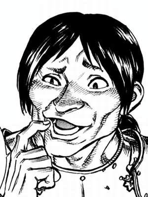

Gaston

Gaston, tem cabelo preto puro, amarrado em um rabo de cavalo, e um suave pensamento desgastado.
Personalidade
Personalidade
Três anos após Guts juntar-se ao Bando, Gaston é um dos principais membros da tropa de ataque, que é mostrado por ter um profundo respeito ao Guts, tanto como um comandante e amigo. Gaston nunca se arrependeu por ter se juntado aos falcões, mas, como Guts revela em uma discussão com Casca, queria salvar os seus ganhos para abrir uma loja de roupas em Windham. Ele é incapaz de conseguir isso, provavelmente porque ele foi proibido como os outros membros dos Falcões, mas ao revelar isso ao seu ex-comandante, não mostra nenhum sinal de desapontamento, em vez de alegria no fato de que o seu lugar era com os falcões, e que a tropa de ataque eram uma família para ele.
História